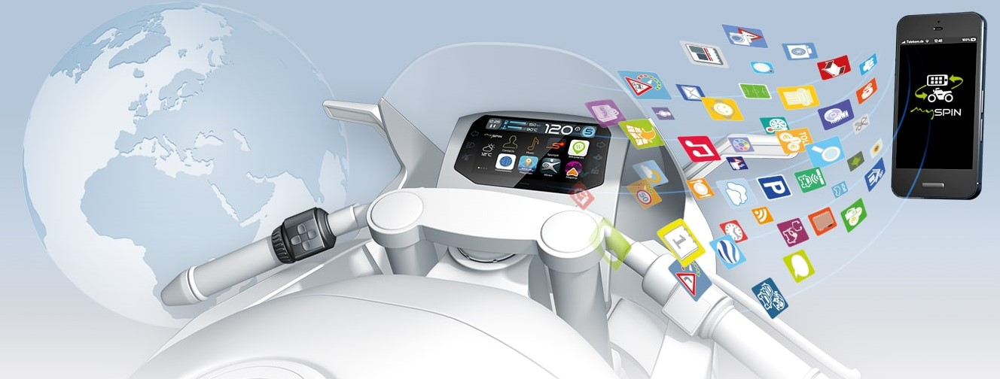

My Bosch Journey
I am a part of a small research team in Bosch's two-wheeler powersports department, working on connectivity based solutions for two-wheelers and their users. These include everything from standard OBD (On-Board Diagnostics) to high-end user-specific performance metrics.
So far, I have worked on rider aggression models, data-driven vehicle models, predictive maintainance solutions and also some hardware development for these products. As most of these projects are still in researh phase, I can't provide any more technical descriptions on a public platform
These projects demand rapid development cycles and are usually based on large automotive data sets. Consequently, I use python 3 extensively, as it is ideal for such applications. Libraries like pandas, asammdf, etc. allow easy interfacing and processing of captured CAN data frames. Following the finalisation of a method, its further implemented on a platform such as the vehicle cluster, as a mobile phone application, or as a native program flashed onto the ECU.